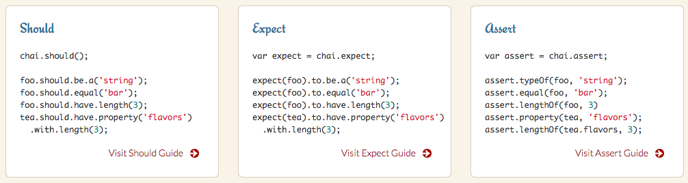

ESLint/Testing
Coding Style
寫讓人看不懂的程式碼也是有點難度的
// go function
function go(a,b, c,d){ return a+b-c/d}
switch(act){
case 'a':
// TODO: there are some bugs here
case 'b':
break;
// case 'c':
//case 'd':
default:
return 1000
}
六個月後再回來專案，怎麼連自己都看不懂
各種程式語言都有比較有名的 Style Guide
Coding Style 沒有絕對的好壞
JS Linter 歷史更替
JSlint -> JSHint -> ESLint
Douglas Crockford 根據自己的 JavaScript: The Good Parts 內容所建構的程式碼檢查工具
JSLint 的規則太強硬了，於是..
可以關掉不喜歡的 Rule
JSHint Rule 種類不夠
於是...
Nicholas C. Zakas 在 2013 年開始做的可擴充程式碼檢查工具，有許多 extend 跟 plugin
安裝 ESLint Editor Plugin
Airbnb JavaScript Style Guide
安裝
npm install --save-dev eslint eslint-config-airbnb eslint-plugin-import eslint-plugin-react eslint-plugin-jsx-a11y
把 airbnb 加到 .eslintrc.json
{
"extends": "airbnb"
}
parser: babel-eslint
如果有用 babel 來寫進階的 js 語法
要用 babel-eslint 作為 parser
npm i --save-dev babel-eslint
{
"parser": "babel-eslint",
"extends": "airbnb"
}
用 env 允許一些環境的全域變數
{
"parser": "babel-eslint",
"extends": "airbnb",
"env": {
"browser": true,
"node": true,
"mocha": true
}
}
Rule 調整
把自訂 rules 加到 .eslintrc.json
{
"parser": "babel-eslint",
"extends": "airbnb",
"env": {
"browser": true,
"node": true,
"mocha": true
},
"rules": {
"no-console": 0,
"no-else-return": 0
}
}在特定檔案調整某些 rules
// try-console.js
/* eslint no-console: 0, no-else-return: 0 */
console.log('try!!!!!');
在特定行關掉某些 rules
// try-console.js
console.log('try!!!!!'); // eslint-disable-line no-console */
Plugins
以 eslint-plugin-react 來說
{
"parser": "babel-eslint",
"extends": "airbnb",
"env": {
"browser": true,
"node": true,
"mocha": true
},
"plugins": [
"react"
],
"rules": {
"react/prefer-stateless-function": 0
}
}.eslintignore
指定忽略的檔案
// .eslintignore
node_modules
build把 eslint 加到 npm scripts
// package.json
{
....,
"scripts": {
"lint": "eslint ."
}
}npm run lint練習
Testing
不熟自動化測試的人，通常都：
手動測試跟幾秒鐘就可以跑上百個
且能精準定位問題並重複執行的單元測試相比
非常的沒有效率
迷思：我沒有時間寫測試
大多寫的根本是不可測試程式碼
function check() {
if (a > 1) {
if (a === 2) {
if (b === 'ya') {
} else {
if (c) {
doSomething();
}
}
} else {
}
} else {
}
}巢狀 n 個 if 就是 2 的 n 次方種可能性
寫測試絕對比 debug 來的快
寫測試可以審視 API 設計
也可以當作使用手冊與文件
許多耗時三個月以上的 Project 的敗亡
都是因為沒有寫測試
原本的開發者無法應付複雜度，或是換人無法接手
要在上萬行且已經上線的專案之中，不改壞任何功能？
不同層級的測試
單元測試 Unit Testing
驗證一個單元 (function、class、module) 的功能與可靠性
是專案測試的根基
整合測試 Integration Testing
驗證一個設計項目 (一組單元) 的功能、效能、可靠性
各物件之間的互動運作正常
驗收測試 Acceptance Testing
是否能針對 uesr story 正常運作功能
應該用使用者能懂的方式撰寫驗收測試
TDD
(Test-Driven Development)
測試驅動開發
回報 bug 的最好方式就是提交失敗的測試
BDD
(Behavior-Driven Development)
行為驅動開發
TDD v.s. BDD
// TDD
assertEqual(runner.name, 'Mocha');
// BDD
runner.should.have.property('name').equal('Mocha');
expect(runner).to.have.property('name').equal('Mocha');
Test Runners
純粹執行 js 也能進行測試，不過用 runner 有許多好處
Mocha
Install
npm install -g mochamocha預設會執行 test 資料夾裡面的 js 檔
用 it 寫一個個的測試
// test/node-assert.js
const assert = require('assert');
it('should be true', () => {
assert(true);
});
it('should equal', () => {
assert.deepEqual({ name: 'Amy'}, { name: 'Amy' });
});
it('should throw', () => {
assert.throws(
() => { throw new Error('爆了') }
);
});
用 describe 來組織一組測試
// test/node-assert.js
const assert = require('assert');
describe('Node Assertions', () => {
it('should be true', () => {
assert(true);
});
it('should equal', () => {
assert.deepEqual({ name: 'Amy'}, { name: 'Amy' });
});
it('should throw', () => {
assert.throws(
() => { throw new Error('爆了') }
);
});
});
Async Tests
接 done callback 並在結束後 call
// test/node-assert.js
const assert = require('assert');
it('should be true', (done) => {
setTimeout(() => {
assert(true);
done();
}, 200);
});
或是回傳 Promise
// test/node-assert.js
const assert = require('assert');
it('should be true', () => {
return new Promise((resolve, reject) => {
setTimeout(() => {
assert(true);
resolve();
}, 200);
});
});
Assertions
var should = require('should');
var user = {
name: 'tj'
, pets: ['tobi', 'loki', 'jane', 'bandit']
};
user.should.have.property('name', 'tj');
user.should.have.property('pets').with.lengthOf(4);
someAsyncTask(foo, function(err, result){
should.not.exist(err);
should.exist(result);
result.bar.should.equal(foo);
});
不建議用 should，因為他主要基於繼承 Object
var should = require('should');
// if the object was created with Object.create(null)
// then it doesn't inherit `Object` and have the `should` getter
// so you can do:
should(user).have.property('name', 'tj');
should(true).ok;
// 不能對非物件 call .should
const user = null;
user.should.have.property('name', 'tj');
// Boom!!
chai 支援 should, expect, assert 三種
我個人偏好使用 expect (BDD)
const expect = requiure('chai').expect;
expect(foo).to.be.a('string');
expect(foo).to.equal('bar');
expect(foo).to.have.length(3);
expect(tea).to.have.property('flavors').with.length(3);
Chai plugins
幾個我常用的 plugins
用 chai.use(...) 來啟用
const chai = require('chai');
const chaiAsPromised = require('chai-as-promised');
const sinonChai = require('sinon-chai');
const chaiEnzyme = require('chai-enzyme');
chai.use(chaiAsPromised);
chai.use(sinonChai);
chai.use(chaiEnzyme());
chai.use不是用得多就是好
要在測試程式碼可讀性跟學習曲線跟穩地度上做取捨
Test Express/Koa App
建議使用 supertest
Test Express/Koa App
Express 可以參考 這裡
Koa 可以參考 這裡
Testing Double (測試替身)
Spy
一個 spy function 或是包裝既有的 function
判斷 function 有沒有被 call、用什麼參數 call、call 幾次
用 sinon 做 spy
const callback = sinon.spy();
callback();
callback();
callback();
expect(callback.calledThrice).to.be.true;
expect(callback).to.have.been.calledThrice; // with sinon-chai
Mock
與 spy 類似，但需要事先設定期望發生的呼叫，然後在之後驗證
Stub
被 call 會提供特定的回傳值、拋出 Error
試想：怎麼模擬寫入檔案失敗？
手動做
const fs = require('fs');
const _writeFile = fs.writeFile;
fs.writeFile = () => { throw new Error('Err!!!') };
fs.writeFile(....) // throws..
// restore
fs.writeFile = _writeFile;
用 sinon 做 stub
const callback = sinon.stub();
callback.withArgs(42).returns(1);
callback.withArgs(1).throws("TypeError");
callback(); // No return value, no exception
callback(42); // Returns 1
callback(1); // Throws TypeError
Fake
簡化過的邏輯
// 假想有一個 FileSaver Class
const fs = require('fs');
const options = {};
const saver = new FileSaver(fs, options);
saver.save('hello.txt', 'Say Hello~~~');
// 用 memory 來取代真實的 file system
const MemoryFileSystem = require('memory-fs');
const fs = new MemoryFileSystem();
const options = {};
const saver = new FileSaver(fs, options);
saver.save('hello.txt', 'Say Hello~~~');
或是
// 登入資訊
const credential = {
username: 'xxx',
password: 'yyy',
};
// 假設有個 system object
system.authorise = (credential) => { // 複雜 ... };
// 先把它存起來，以便之後可以恢復
const _authorise = system.authorise;
system.authorise = (credential) =>
credential.username === 'xxx' &&
credential.password === 'yyy'
system.authorise(credential);
// true;
Dummy
參數需要有，但是測試實際上根本不會用到的假物件
London schools of TDD
v.s.
Chicago schools of TDD
// http://programmers.stackexchange.com/a/123672/121521
// 假設 ledger.calculate('5 * 7') 會呼叫 calculator.multiply(5,7) 並得到 35
// London schools of TDD
const spy = sinon.spy(calculator, 'multiply');
spy.withArgs(5, 7);
ledger.calculate('5 * 7');
expect(spy.withArgs(5, 7).calledOnce).to.be.true;
// Chicago schools of TDD
expect(ledger.calculate('5 * 7')).to.equal(35);
測試瀏覽器環境
import React from 'react';
import { shallow } from 'enzyme';
import sinon from 'sinon';
describe('<MyComponent />', () => {
it('renders three <Foo /> components', () => {
const wrapper = shallow(<MyComponent />);
expect(wrapper.find(Foo)).to.have.length(3);
});
it('simulates click events', () => {
const onButtonClick = sinon.spy();
const wrapper = shallow(
<Foo onButtonClick={onButtonClick} />
);
wrapper.find('button').simulate('click');
expect(onButtonClick.calledOnce).to.equal(true);
});
});
在測試裡面用 babel
npm i --save-dev babel-register
mocha --compilers js:babel-register
測試一定要自動化、想測試一個指令即可觸發
Continuous Integration (CI)
可以把自動化 test、release、deploy 整合
最好是幾分鐘就能做一個新的 release
下班前 master 不能 build fail
把 master 搞到 build fail 的人要受逞罰
CI 服務
Code Coverage
有百分之多少的程式碼、function 被測試過、跑過幾次
涵蓋率低品質一定不好，但涵蓋率高不太表品質好
有可能沒測到重點
測試涵蓋率工具
測試涵蓋率服務
測試極端、負面案例
// 正面案例
add(1, 2);
add(1, 3.14);
// 負面案例
add(null, undefined);
add(1, '1');
add(0x80, '00001');
好的設計不能用工具強制獲得，它是由彼此交談、互相學習、結隊進行代碼審查的人創造的。 - The Art of Unit Testing
Thanks for listening